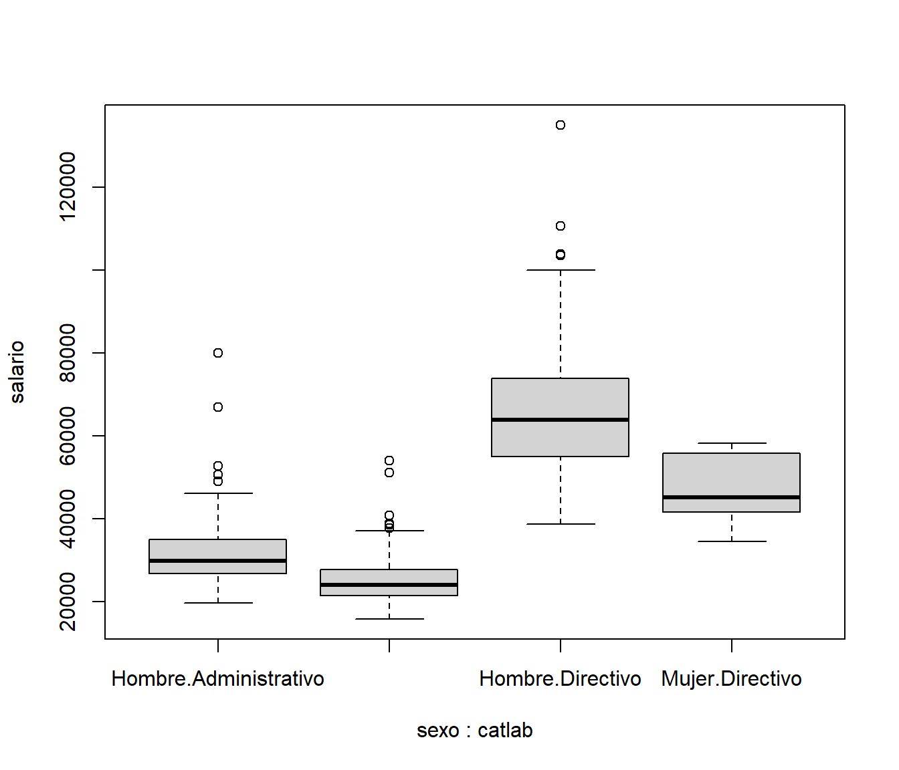

4.1 Operador pipe (redirección)
El operador %>% (paquete magrittr) permite canalizar la salida de una función a la entrada de otra.
Por ejemplo, segundo(primero(datos)) se traduce en datos %>% primero %>% segundo, lo que facilita la lectura de operaciones al escribir las funciones de izquierda a derecha.
Desde la versión 4.1 de R está disponible un operador interno |> (aunque yo sigo prefiriendo %>%).
Por ejemplo:
# El fichero 'empleados.RData' contiene datos de empleados de un banco.
# Supongamos por ejemplo que estamos interesados en estudiar si hay
# discriminación por cuestión de sexo o raza.
load("datos/empleados.RData")
# NOTA: Cuidado con la codificación latin1 (no declarada)
# al abrir archivos creados en versiones anteriores de R < 4.2:
# load("datos/empleados.latin1.RData")
# Listamos las etiquetas
knitr::kable(attr(empleados, "variable.labels"), col.names = "Etiqueta")| Etiqueta | |
|---|---|
| id | Código de empleado |
| sexo | Sexo |
| fechnac | Fecha de nacimiento |
| educ | Nivel educativo (años) |
| catlab | Categoría laboral |
| salario | Salario actual |
| salini | Salario inicial |
| tiempemp | Meses desde el contrato |
| expprev | Experiencia previa (meses) |
| minoria | Clasificación étnica |
| sexoraza | Clasificación por sexo y raza |
# Eliminamos las etiquetas para que no molesten...
# attr(empleados, "variable.labels") <- NULL
empleados |> subset(catlab == "Directivo", catlab:sexoraza) |> summary()## catlab salario salini tiempemp
## Administrativo: 0 Min. : 34410 Min. :15750 Min. :64.00
## Seguridad : 0 1st Qu.: 51956 1st Qu.:23063 1st Qu.:73.00
## Directivo :84 Median : 60500 Median :28740 Median :81.00
## Mean : 63978 Mean :30258 Mean :81.15
## 3rd Qu.: 71281 3rd Qu.:34058 3rd Qu.:91.00
## Max. :135000 Max. :79980 Max. :98.00
## expprev minoria sexoraza
## Min. : 3.00 No:80 Blanca varón :70
## 1st Qu.: 19.75 Sí: 4 Blanca mujer : 4
## Median : 52.00 Minoría varón:10
## Mean : 77.62 Minoría mujer: 0
## 3rd Qu.:125.25
## Max. :285.00Para que una función sea compatible con este tipo de operadores el primer parámetro debería ser siempre los datos.
Sin embargo, el operador %>% permite redirigir el resultado de la operación anterior a un parámetro distinto mediante un ..
Por ejemplo:
# ?"|>"
# empleados |> subset(catlab != "Seguridad") |> droplevels |>
# boxplot(salario ~ sexo*catlab, data = .) # ERROR
library(magrittr)
empleados %>% subset(catlab != "Seguridad") %>% droplevels() %>%
boxplot(salario ~ sexo*catlab, data = .)